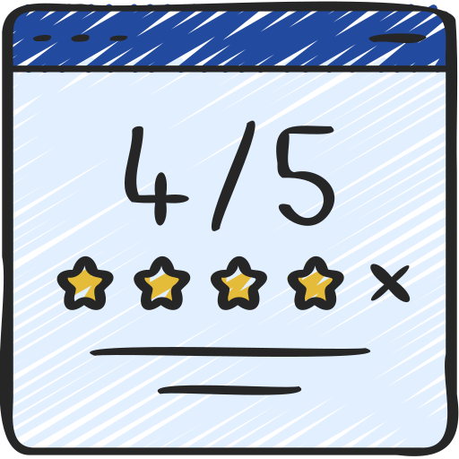

Bill Mahoney
Recomiendo la evaluación de bienestar psicológico universitario, me ayudó a organizar mejor mis emociones durante los exámenes finales y a llevarla mejor con mi vida social.

Saba Cabrera
Recomiendo la evaluación de síntomas de trastorno psicológico, me permitió identificar patrones de ansiedad que antes ignoraba y poder tratarlos con un profesion altamente calificado.

Shae Le
Recomiendo la evaluación de síntomas de trastorno psicológico, me permitió identificar patrones de ansiedad que antes ignoraba o desconocia como tales y poder tratarlos.

Skylah Lu
Recomiendo la evaluación de estrés y resiliencia, me dio herramientas para manejar la presión del trabajo diario y no sentirme frustado por tareas cotidianas en la vida.

Griff Richards
Recomiendo la evaluación de apoyo emocional, me hizo sentir escuchado y comprendido por primera vez en mucho tiempo.Creo que ahora si tengo a alguien en quien confiar

Stan John
Recomiendo la evaluación de superación del trauma, me ayudó a procesar una experiencia difícil de mi infancia y tener una vida mas plena sin guardar rencor por cosas que ya no estan en mis manos.